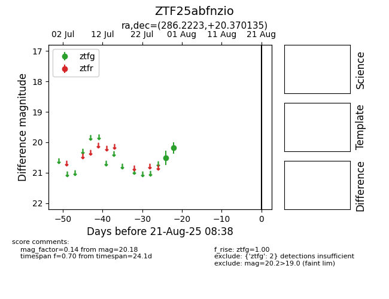

Target ZTF25abfnzio at 2025-08-21 08:38, see:
FINK: fink-portal.org/ZTF25abfnzio
Lasair: lasair-ztf.lsst.ac.uk/objects/ZTF25abfnzio
ALeRCE: alerce.online/object/ZTF25abfnzio
alt names
ZTF25abfnzio (ztf,alerce)
coordinates:
equatorial (ra, dec) = (286.2223,+20.37014)
galactic (l, b) = (52.6201,+6.30261)
photometry
last ztfg=20.18
2 ztfg detections
